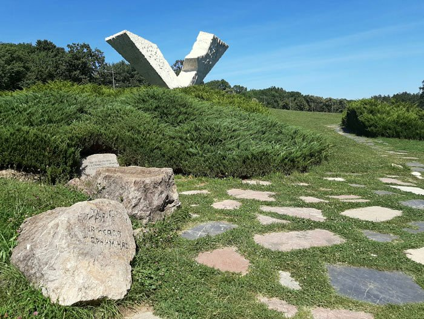

Top 3 mesta za posetu u Kragujevcu
Stara Crkva

Locirana na desnoj strani reke Lepenice, Stara Crkva je sagrađena 1818, dok je njen enterijer dekorisan između 1818. i 1822. godine. Crkva je istorijsko mesto gde je zvanično proglašen Prvi srpski ustanak.
Prva kragujevačka gimnazija
Srednja škola, osnovana 1833. godine. Poznata je i kao najstarija srpska škola južno od linije Sava - Dunav.
Spomen park Šumarice
Mesto gde je ubijeno oko 2,800 muškaraca i dečaka iz grada od strane nemačkih okupacionih snaga, 21. oktobra 1941, tokom II svetskog rata. Među žrtvama je bilo na stotine srednjoškolaca.